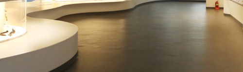

박물관 소개
인사말
발자취
오시는 길
오시는 길
SEODAMUN MUSEUM OF NATURAL HISTORY
교통 안내
지하철
신촌역 출발 : 신촌역 2호선 서대문03번 마을버스 서대문자연사박물관 정류장에 하차
무악제역 출발 : 무악제역 3호선 7738(지선버스) 서대문자연사박물관 정류장에 하차
버스
간선버스: 110A번, 163번
지선버스: 7017번, 7720번, 7738 번
※ 지하철 연계버스(7738) 이용 시 중앙차선 버스정류장이 아닌 지선버스 정류장으로 가셔야 합니다.
주차 안내
구분
기본(2시간)
2시간 초과 10분당
대형(20인승 이상)
5.000원
1.000원
소형(20인승 미만)
3,000원
500원
경차(1,000cc 이하)
정산금액의 50% 할인
저공해차량(표지부착차량)
정산금액의 50% 할인